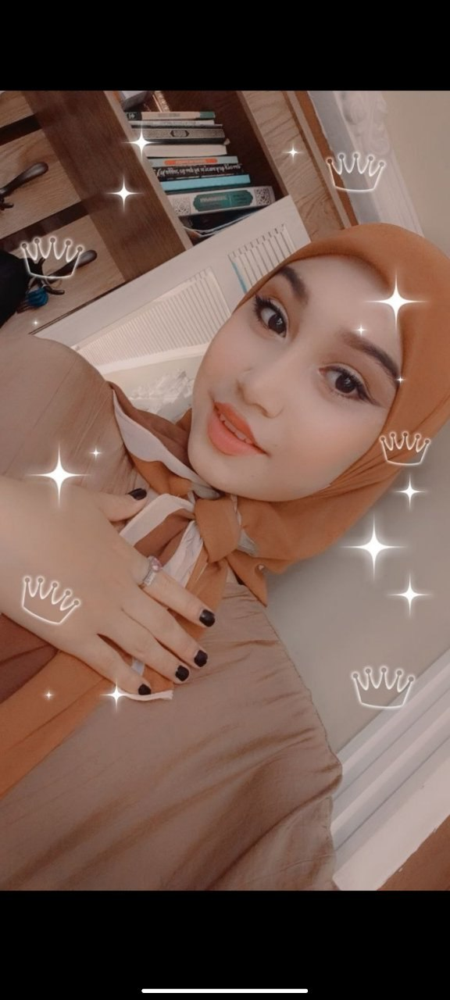

Vidioni Ko`rishni ustiga bos👌
Mening armon bo`lgan sevgim

Menga sen armon bo`lding sen uchun ichimdagi gaplarni shu sayt ichiga joylashga qaror qildim. Men seni boshida tanime sevdim surushtirmasdan sevdim nmaga seni yuredan sevdim ko`nglim ketti osha taklif berganimda rad qilding, ham men o`zimga vada berdim hudo hohlasa shu qizni topib sevaman didim ha allohni ishini qara birga qildi ha bizga sinovlar berdi , man hama sinovdan otdim san ham udaladin lekin oxirigacha bormadin nmaga ko`nglinga boshqasi kirdi. ha san bilan yil gaplashdim shu yil ichida nimalar bo`p ketti ozin oyyla shunca sinovlardan ottik shuncasiga sabr qildik
lekin oxiriga kelganda ikkimiz ham toxtadik man nmaga toxtadim san uji mandan zeriktin oshancun man harakatan toxtadi. san esa mandan oldin toxtab boldin bunga sabab bolishi mumkin sani ko`nglingda boshqasi borligi uchun ozgardin szdan boshqasi yoq dima sanga man yosh bola masmanu men senga bor mehrim etibor berdim rashq qildim qizgondim bilmadim senga nima yetishmadi😔 men seni haligacha sevaman haligacha qizgonaman ha sani qigan ishlarin yoqmayapti nima qile manam yuragim sevgan bosa ayib manda masku san bilan urushganimdan kiyin srazi ozini qoydin man bunga chidolmadim ha san ten boli osha azizga yopishdin kiyin man butunle tugatdim. Man sokinsam urushasan a osha boburlarin boshqa yigitlarin itde sokadiyu ha bunga sabab san ulani sevgansan mani sevmadin sevdim dimagin, mani sevmaganini isbotladin osha bobur bilan gaplashdin ha niyatini bilib turib gaplashdin man san bilan unaqa niyatda gaplashmodim. hulas nima bosa ham man sandan kecdim endi qaytmiman. san sevgimi qadrini bilmadin ha mandan yaxshisini topsen baxtli bol ❤️🩹 Hamasi uchun uzur.
Kuygan yurak 🖤
Sevdim... ammo sevgim menga dard bo‘ldi,
Kulgan ko‘zlarimda endi yosh bo‘ldi.
U ketdi, ortidan xotira qoldi,
Yuragim sevgidan kuyib kul bo‘ldi.
Tunlari ismingiz xayolimda jonlanar,
Eski xotiralar yuragimni qiynar.
“Unutdim” desam ham yolg‘on ekan,
Yurak sevganini qanday unutarkan...
Siz baxtli bo‘ling, men dardim bilan qolay,
Sizni sevgan yurakni qanday unutay?
Ba’zan sevgi baxt emas ekan,
Ba’zan sevish — ichingdan yonish ekan... 🖤